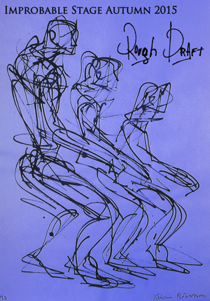

past performance |
|||
|
Rough Draft By Improbable Stage showtimes:September 17-19, 23-26, 30 | October 1-3 This is the NY premiere of Improbable Stage’s new devised theatre piece exploring human fragility and the necessity of change. All of us at Improbable Stage are thrilled to debut this piece at The Wild Project. Rough Draft, a powerful and compelling theater piece utilizing movement as its primary vocabulary, tells the story of an established novelist for whom a tragic event serves as a catalyst for self examination. Having believed his life was a well written book, he must question and redefine for himself what it means to be "successful" and discover if he possesses the courage to begin anew, another “rough draft." |
 | ||
|
Cast includes: Understudies: Creative Team: Director - Stacy A. Donovan IMPROBABLE STAGE is a not-for-profit theatre company based in New York City. Our members make up an impassioned ensemble that is dedicated to creating intriguing theatrical work, both original pieces and reimagined classics, and to supporting theatre artists as they make their way in New York City. For more information please go to our website at improbablestage.org. |
|||
upcoming performances |
|||
 |
|||
| EVQ Film Festival 2018 August 20-25 |
|||
performance archives |
|||
| 2018 | 2017 | 2016 | 2015 |
| 2014 | 2013 | 2012 | 2011 |
| 2010 | 2009 | 2008 | 2007 |